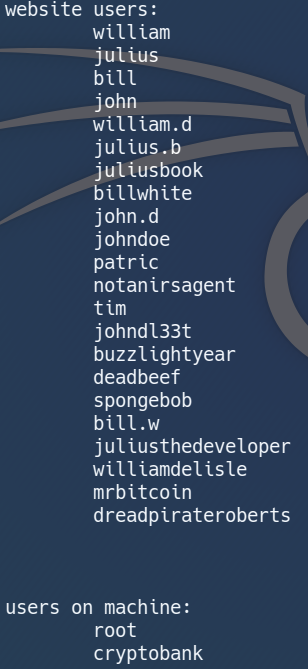

Introduction:
Hello im back with another writeup! Today we will be hacking CryptoBank, a very well designed box by emaragkos.
Our mission will be to find the bitcoin wallet of the bank, which is stored in root's home directory.
Analysing the problem statement, there might be some sort of WAF or IDS present, so let's keep that in mind.
Its ip in this writeup will be 192.168.1.250 and I will add it to /etc/hosts as cryptobank.local.
Note: There might be some difficulties accessing the login page if we don't give it a hostname.
Nmap:
Let's start with a nmap scan on our target:
Analysing our nmap result, we got ssh on port 22 and http on port 80.
We will now proceed to web enumeration.
Web Enumeration:
Navigating to port 80, we see a nice looking home page of a bank.
Let's scroll down further and click around to see if we can collect any information.
Most of the links are useless, but we do find a login page and some information about the people working in this bank.
This is definitely good information, and we should store it in a file for future use.
Firstname dot lastname is a common username format for companies, let's add that in too.
Login Page:
We can see that registration is closed and WAF is indeed present.
I don't feel like attacking the login page as of now, so let's run a directory scan to see if we can collect more information.
ffuf scan:
We do find some directories. Let's check them out.
Nothing too interesting here.

/development requires basic auth and admin:admin didn't work, so that's a dead end too.
However we do know that the developer of this bank is Julius, so we can come back later once we find out his password.
I also found a phpinfo page, which contains some useful information.
The phpinfo page tells us about the server-admin and the document root, which is pretty useful when we are reading files.
After checking all the directories, we still don't have any information related to the login page.
Not the best situation to be in, but let's just try to attack it now.
Bruteforcing a page with WAF isn't the smartest move, so I shall just send the login request over to sqlmap.
After some fuzzing, sqlmap identified that the login page is vulnerable to time-based blind sql injection, and it was able to dump out the databases.
Let's go ahead and extract user credentials.
Great! Now we have a list of usernames and passwords of registered users.
Adding to our list:
Seems like this bank uses firstname dot lastname and firstname+lastname as a naming convention.
Let's log in as William to take a look just because he has the first account.
Hmmm if we had an account we will be able to take all of his money.
We can get him in debt too but that seems pretty pointless as of now.
Let's just leave this account in peace and go back to /development.
Fortunately the credentials julius.b:wJWm4CgV26 worked and we did not have to bruteforce it.
The page itself only has a message telling us that it is for development purpose, so let's run ffuf again.
Remember to add the header!
We see /backups and /tools.
Backups:
Clicking on home/ brings us to a backup homepage that looks exactly the same as the landing page.
Doesn't seem tooooo interesting, let's check /tools.
Tools:
???
Not a good idea at all to leave such tools lying around.
Let's take a look each of them.
Execute a command:
View a system file:
Upload a file:
File upload seems the easiest to me so I'll choose it.
I thought it was going to be an easy one but...
the WAF appeared and did a great job at identifying my webshell.
I tried my best to evade it by modifying the file-extension and file-type but still failed to get pass it.
That's enough, let's try the view_file function instead.
Let's check if directory traversal exists.
...of course its blocked.
After a while of fuzzing, I realised that this function calls files from the root directory, and hence there is no need for ../s.
Let's try to view the file upload function and maybe we can get to inspect the php code.
Even better, the php code is executed!!
However we don't control any files on the system as of now, so we can't do much with this.
Let's test for remote file inclusion.
RFI:
FINALLY we found a vulnerability where we can utilise to get on the machine.
I hosted a php reverse-shell and viewed(executed) it.
We are on machine and indeed in the root directory.
Surprisingly we can read the user flag as www-data, so let's grab that.
Getting Root:
After looking at /etc/passwd, we found a user cryptobank on the machine.
Let's add that to our users list too.

Who knows we might need it someday.
I ran linpeas.sh and found some password hashes.
$2$ is bcrypt, which is a pain to crack.
Instead of cracking them, let's enumerate the directory where we found them.
/var/www/cryptobank:
The firewall is found in the directory /ninjafirewall.
Let's analyse the php code to see if we can find any credentials.
In /conf/options.php we find the username of the account, administrator.
In /pro2-reset-is-now-hidden.php we find some info on how to reset the password for ninjafirewall.
Lazy developers simply renaming the file instead of deleting it.
Hmmm username between 6 and 20 characters and starts with any word character..."administrator" sounds just right.
So the script will randomly generate a 10 characters long password as our new password.
Navigating to the directory, we see a login page.
However we are able to visit the password reset page without logging in.(lazy devs again oops)
We know that the username is administrator, so let's reset the password.
and we got the new password!
We can now log in as administrator and enumerate the management page of the firewall.
Seems like we were supposed to find the page and turn the firewall off before uploading our shell...
But since we already got a shell, this isn't that useful anymore.
Let's go back to our shell and check for listening ports.
We've got dns, ssh, http, mysql and a weird port listening at 8983 that is not even on localhost.
If we check ifconfig, we will see a docker interface at 172.17.0.0/16.
We can't directly access that port from our attacking machine, so let's do a port forward.
Here im using chisel to create a tcp tunnel, but other tools will be fine too.
Now we see that our attacking machine is listening on port 8983 too.
Google tells us that port 8983 is the default port for Solr, an open-source enterprise-search platform.
Let's run an nmap scan against this port.
Nmap:
It is indeed Solr.
nmap did not tell us the version of Solr though, so let's check the page out manually.
Solr Admin:
We see that the server is running on version 8.1.1.
Before we dive into more enumeration, let's check searchsploit first.
The version 8.2.0 RCE might be useful.
We can mirror it and try the script.
The script did work, and we have code execution on the server now.
Let's use it to get a reverse shell on our other shell.
and we get a shell!
If we do the tty magic we can see that we are the user solr.
Since we are a proper user, let's check our sudo privileges.
No password required for all???
Let's get a root shell straightaway!
Of course it wouldn't be so easy lmao...
Everything requires a password.
After some trial and error, we guessed the weak password:solr.
and finally, we have rooted the machine and got the bitcoin wallet.
Afterwards I learnt from the creator of the machine that I wasn't able to sudo without a password because the last sudo rule takes precedence over the previous ones.
Eventhough it seemed like we could sudo without a password, we actually do need to provide the password for all sudo actions.
Conclusion:
CryptoBank is an amazing machine, and the creator really put in a lot of effort from designing the webapp to crafting the path to root.
I love the fact that there are quite a lot of ways to get on the box, and it is heavy on enumeration.
I think most people got a shell on the box by finding a .git directory, and then recreating it to find out about the firewall/a way to execute commands with the "execute a command" function. That's definitely more fun than exploiting the RFI imo.
Nevertheless we still explored the firewall and the password reset function, so we're not really missing out much there :p.
That's all for today...it's a pretty long writeup lol.
Thanks again to the creator of the machine @emaragkos and Vulnhub for hosting it. Will definitely recommend trying this machine.